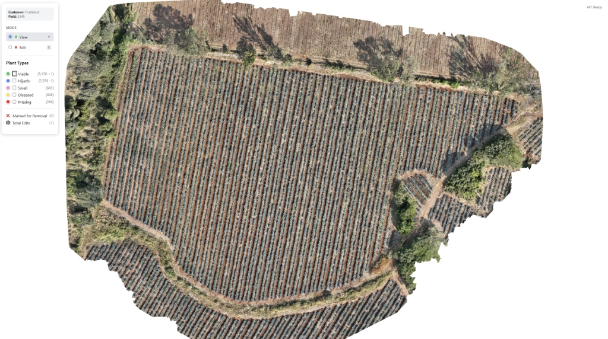
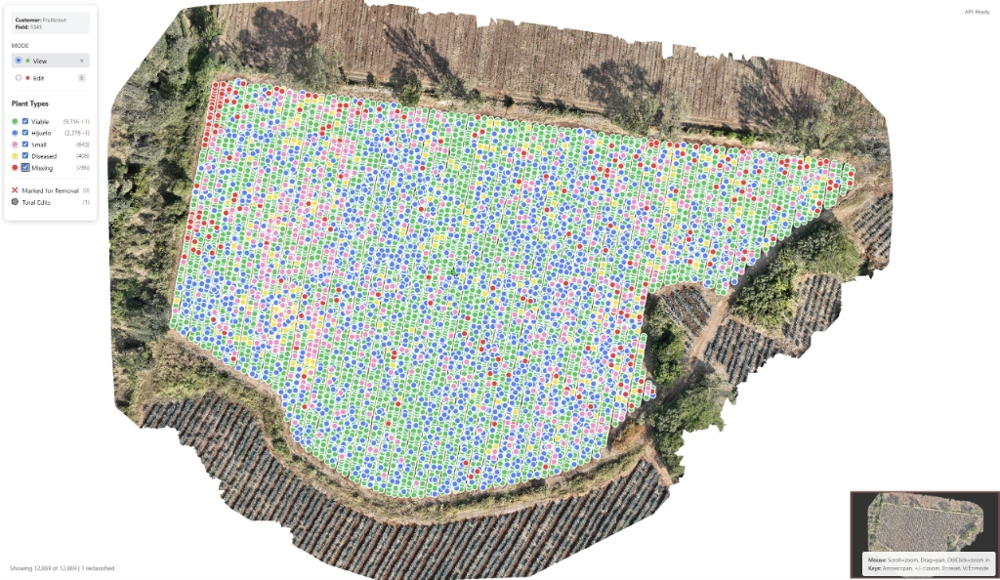
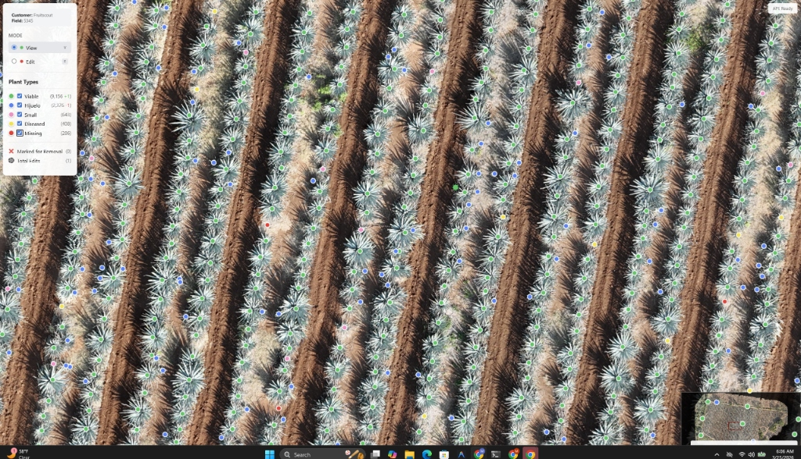
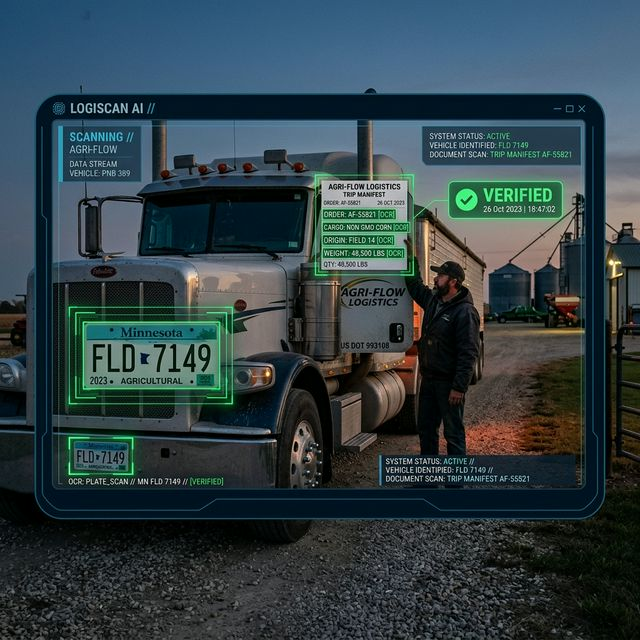

Automation
for the CRT.
How FarmAgent closes every gap in the NOM-006-SCFI-2012 traceability chain — from hijuelo registration to field passport verification — with verified AI, not paper estimates.
The CRT's inventory framework demands a closed traceability chain from planting to passport. Today, that chain is built on estimation.
- Year 0 Registration — Growers estimate hijuelo count by row. Errors compound for 7 years.
- Annual Updates (Jan–Jul) — Scouts walk a sample path and extrapolate. CRT accepts the self-report.
- Year 6–7 Harvest — If SIGA balance diverges from field reality, passports are denied on mature piñas worth $1,500–$3,500/ton.
- Inspector Arrival — Paper files, disconnected records, no photo proof.

FruitScout is the only platform that can look at an agave field from a drone and tell you — plant by plant — exactly what you have.
| Class | What It Means |
|---|---|
| Viable | Mature, healthy plant — counts toward CRT passport balance |
| Hijuelo | Offshoot / pup — registered as a future CRT asset |
| Small | Sub-mature — growing, not yet in pheromone season |
| Diseased | Symptomatic — flagged for phytosanitary follow-up |
| Missing | Expected position, no plant — attrition gap, replanting trigger |

Piñas
(CRT Asset)
Plants
Flagged
Gaps

Year 0 — Registro de Predios
- Drone generates CRT-grade GPS polygon (±30cm accuracy) automatically
- Visual Inventory counts and classifies every hijuelo at planting — not estimated by row
- Auto-generated Registro PDF with GPS KML, plant count by class, and photo proof
Years 1–6 — Annual SIGA Update (Jan–Jul Window)
- Mortality Bleed Rate — exact % lost since prior year, by class (Diseased vs. Missing)
- Hijuelos that matured to Viable are auto-promoted in the CRT record
- Attrition attributed to phytosanitary cause — defensible explanation for every lost plant
- SIGA-ready annual report auto-generated; no manual re-entry

The Visual Inventory doesn't just report gaps — it triggers action.
- GPS Gap Map — 🔴 Missing dots converted to replanting waypoints. Crew navigated to exact row and position.
- Auto-trigger at >3% density (blocks ≤ Year 2) — replanting work order fires without manual decision
- Year window alert — flags when replanting is too late for the cohort; triggers SIGA amendment instead
- 60-day survival tracking + SIGA balance update on success

CRT Inspector Arrives — Unannounced
- Live SIGA export — inspector-ready PDF in one tap: YOLO count, phytosanitary logs, GPS polygon, drone imagery
- Read-only inspector portal — shared as a link; full year of data on their tablet, no paper
- Discrepancy alert — 60 days before annual window if declared count vs. YOLO count diverge >3%
Year 5–6 — Harvest Readiness
- Maturity scan — NDVI + plant size to identify peak-ripeness blocks
- Passport Volume Estimator — YOLO count of harvestable plants cross-checked vs. SIGA balance
- Pre-harvest shortfall alert — flags if tonnage estimate exceeds SIGA balance before season starts

Today: three photos sent via WhatsApp to HQ. Image buried in chat. No machine-readable record. No cross-check against the CRT folio.
FarmAgent Mobile Capture Flow
- License Plate OCR — plate extracted and cross-checked against authorized carrier list. Pass/Fail in real time.
- Seal / Lock CV — seal presence verified, tampering checked, seal number extracted via OCR.
- Guía de Traslado OCR — Folio Number, polygon ID, tonnage, and distillery destination extracted and auto-validated against CRT record.
- Structured digital record — timestamped, GPS-tagged, push notification to HQ with pass/fail summary.

defensible, and unbroken.
Every agave grower in the Tequila DOT is legally required to track their plants from the day they go in the ground to the day they leave in a distillery truck. Most do it on paper and hope the inspector agrees.
FarmAgent makes the CRT's own database agree with your field — permanently.